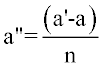
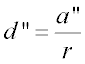
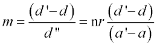

Sets the resolution for graphics and calculations.
PIXELS n [ r ] [ ON ] [ FILL ]
OFF NOFILL
| Option | Description |
|---|
| n | sets the number of equally-spaced pixels along the vertical axis of the
plotting window for all subsequent plots (default=39) |
| r | ratio of pixels per system unit along the horizontal axis to pixels per
system unit along the vertical axis (default=1) |
| ON or OFF | flag to turn the plotting of a pixel sampling box on or off (the
default) |
| FILL or NOFILL | flag to fill or not fill the plotting window, in both directions, with the
plot |
- Sets the resolution of the various plotting
functions by dividing the window into a given number of pixels.
- Also sets the number of rays used to create
a profile, and therefore, determines the resolution of system plots.
- If the window is square, the plotting
window is divided into a grid n pixels vertical by n*r
horizontal.
- The default value of n
is 39. (The DIMENSION command may be used to determine the
maximum number of pixels allowed in your version of ASAP.)
- The r is the desired
aspect ration of the pixels; that is, the ratio of the vertical width to the
horizontal (default 1). This option can be used to assure that the chracter plots
are of the correct proportion.
- The number of horizontal pixels, m, is calculated from the window parameters (a, a', d, d'), n, and r,
as follows:



- By default, all high resolution
(non-printer) graphics are mapped into the plotting window so that the aspect of the
physical entities is properly maintained. However, physically distorted views, where
the entity completely FILLs the plotting window in both
directions, can also be obtained.
- By default, ASAP autoscales so that the
aspect ratio is maintained. It is possible to distort the aspect ratio by making
r negative.
- Certain graphics commands, PROFILE in particular, can plot a dotted box to highlight the current
window setting. ON/OFF toggles this feature; the default is
OFF.
- The FILL option allows
you to plot physically distorted views where the entity completely fills the
plotting window in both directions.
- PIXELS controls the
number of data pixels generated by the SPREAD command (within the
current WINDOW), and therefore determines the record structure of
the data files they create and use.
- The command argument, PIXELS sets the number of pixels for the current plot only.
PIXELS Examples